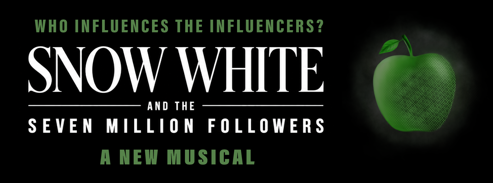

Now booking
Snow White & the Seven Million Followers
In a not-so-distant future where AI has decimated the creator economy, a mysterious new social media platform dangles a lifeline before the world’s desperate influencers, offering them one last chance to maintain their livelihoods. But is the deal too good to be true?
A sharp commentary on the intersection of social media and AI, the collapse of authenticity, and the unsettling possibility that in a world where everything might be fake, the most dangerous lies are the ones we most desperately want to believe.